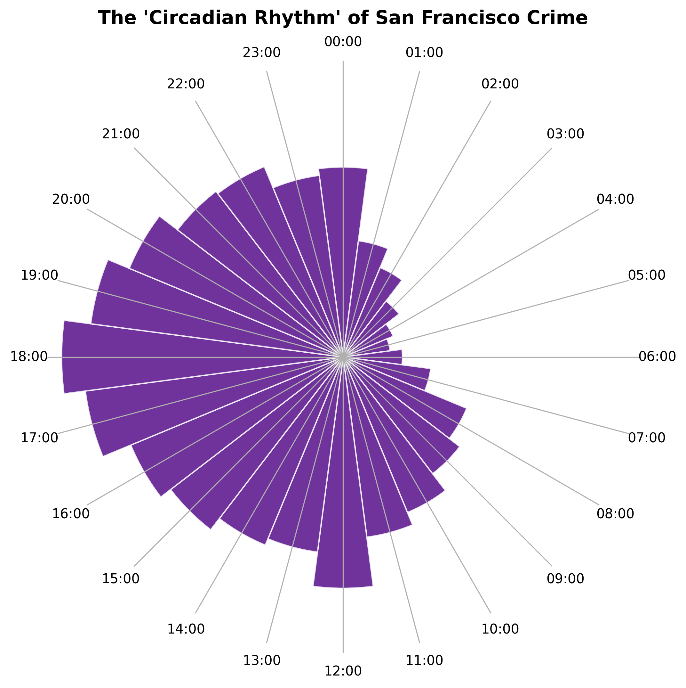

[Hook the reader here. Explain the concept of a city having a "circadian rhythm" and how crime isn't just about 'where', but 'when'.]
[Introduce your dataset. Briefly explain what the SFPD incident reports are, and define what you mean by "Personal Focus Crimes." Remember your learning outcome: A visualization without context is just a pretty shape. Tell the reader what they are about to look at.]

[Transition text: You just showed them the overall clock. Now, guide their attention to a specific insight. Explain how some crimes rely on the cover of darkness, while others rely on empty daytime houses.]
[Introduce the concept of Burglary as a crime of "absence." Set up the map below so they know what to look for when they press play on the animation.]
[Transition text: Contrast Burglary with Drug Offenses. Explain the insight you found in your notebook: that while they are correlated (r = 0.46), their relationship to the 'Crime Clock' is totally different because Drug Offenses are crimes of "presence."]
[Encourage the reader to interact with the next chart. Tell them to hover over the dots to see the specific dates and counts.]
[This is where you hit the final learning outcome. Acknowledge the limitations of police data. Explain that an "incident report" does not equal a conviction, and that drug offense patterns are heavily influenced by patrol routes and enforcement priorities, not just where crimes happen.]
[Briefly tie this back to the Week 1 readings on predictive policing. Show that you understand the context of the system you are visualizing.]